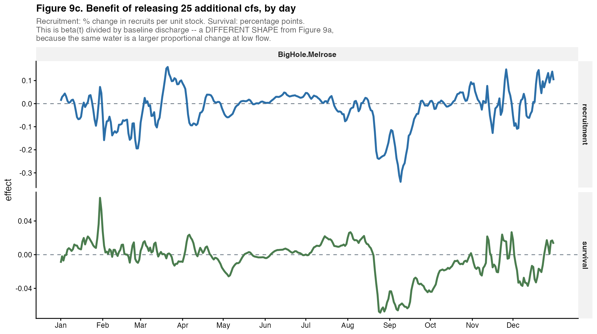
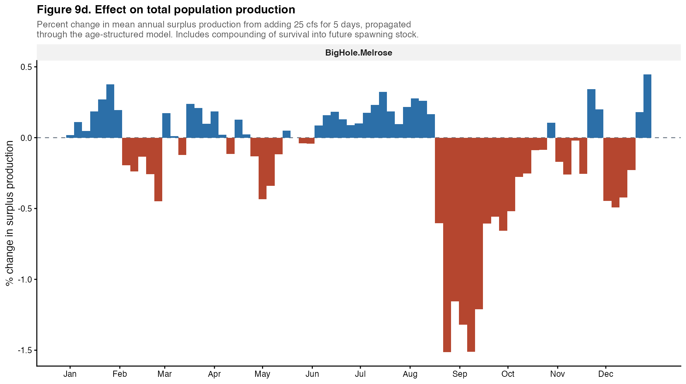
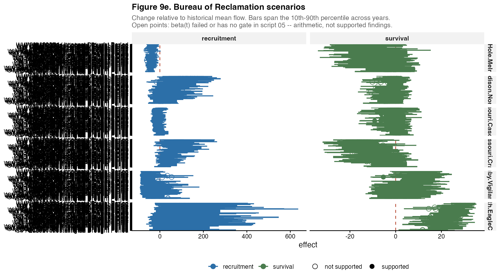

One active site. This page compares populations, so it has nothing to work with. Add sites to
CFG$sites$activeinconfig_local.Rand re-run.
A cross-site synthesis that pools validated and unvalidated curves is a synthesis of arithmetic. This table comes first for that reason.
| site | process | n_years | r2_blocked | p_value | passes |
|---|---|---|---|---|---|
| BigHole.Melrose | recruitment | 33 | -0.259 | 0.394 | FALSE |
| BigHole.Melrose | survival | 32 | 0.421 | 0.031 | TRUE |
0 of 1 population pass the recruitment gate. A failure is a statement about the resolution of that site’s record, not a null effect of flow.
FIGURE NOT AVAILABLE -
09_f9awas not produced for this site.
FIGURE NOT AVAILABLE -
09_f9bwas not produced for this site.
Read timing comparisons carefully. Sites do not share a flow lag - it comes from each IPM’s own model selection. Two curves plotted on one day-of-year axis may refer to different calendar years relative to the cohort, so a difference in apparent timing can be a difference in lag rather than in biology.
| site | process | lo_month | median_month | hi_month | width_days | resolvable |
|---|---|---|---|---|---|---|
| BigHole.Melrose | survival | Jan | Jan | Nov | 303 | FALSE |
| BigHole.Melrose | recruitment | Jan | Sep | Dec | 324 | FALSE |
0 of 2 site-process combinations resolve to a window narrower than 90 days. Where they do not, the deliverable is a season and a statement that the record cannot do better - which is itself a finding about Montana flow records.


| site | volume_af | window_days | sustained_cfs | start_date | end_date | effect | p_positive | passes |
|---|---|---|---|---|---|---|---|---|
| BigHole.Melrose | 5000 | 7 | 360.121 | 12 Jun | 18 Jun | 3.758 | 0.988 | FALSE |
| site | Scenario | Period | Type | process | effect | p_negative | frac_extrap | status |
|---|---|---|---|---|---|---|---|---|
| BigHole.Melrose | HD | 2080s | Most Intense Drought Period | recruitment | -62.050 | 0.887 | 0.121 | UNSUPPORTED - gate failed |
| BigHole.Melrose | HD | 2080s | Longest Drought Period | recruitment | -60.239 | 0.893 | 0.101 | UNSUPPORTED - gate failed |
| BigHole.Melrose | HD | 2080s | Climate Change Only | recruitment | -55.412 | 0.858 | 0.109 | UNSUPPORTED - gate failed |
| BigHole.Melrose | HW | 2080s | Most Intense Drought Period | recruitment | -54.971 | 0.867 | 0.079 | UNSUPPORTED - gate failed |
| BigHole.Melrose | HD | 2080s | Most Intense Pluvial Period | recruitment | -54.772 | 0.861 | 0.103 | UNSUPPORTED - gate failed |
| BigHole.Melrose | HD | 2080s | Longest Pluvial Period | recruitment | -53.832 | 0.842 | 0.133 | UNSUPPORTED - gate failed |
| BigHole.Melrose | HW | 2080s | Longest Drought Period | recruitment | -53.384 | 0.844 | 0.091 | UNSUPPORTED - gate failed |
| BigHole.Melrose | HD | 2050s | Longest Drought Period | recruitment | -52.433 | 0.854 | 0.087 | UNSUPPORTED - gate failed |
| BigHole.Melrose | HD | 2050s | Most Intense Drought Period | recruitment | -52.433 | 0.854 | 0.087 | UNSUPPORTED - gate failed |
| BigHole.Melrose | CT | 2080s | Longest Drought Period | recruitment | -52.219 | 0.860 | 0.078 | UNSUPPORTED - gate failed |
| BigHole.Melrose | CT | 2080s | Most Intense Drought Period | recruitment | -52.219 | 0.860 | 0.078 | UNSUPPORTED - gate failed |
| BigHole.Melrose | HW | 2080s | Climate Change Only | recruitment | -49.525 | 0.822 | 0.096 | UNSUPPORTED - gate failed |
| BigHole.Melrose | WD | 2050s | Longest Drought Period | recruitment | -48.870 | 0.823 | 0.095 | UNSUPPORTED - gate failed |
| BigHole.Melrose | WD | 2050s | Most Intense Drought Period | recruitment | -48.870 | 0.823 | 0.095 | UNSUPPORTED - gate failed |
| BigHole.Melrose | HD | 2020s | Longest Drought Period | recruitment | -48.120 | 0.811 | 0.121 | UNSUPPORTED - gate failed |
| BigHole.Melrose | HD | 2020s | Most Intense Drought Period | recruitment | -48.120 | 0.811 | 0.121 | UNSUPPORTED - gate failed |
| BigHole.Melrose | HW | 2080s | Longest Pluvial Period | recruitment | -48.104 | 0.805 | 0.125 | UNSUPPORTED - gate failed |
| BigHole.Melrose | HW | 2080s | Most Intense Pluvial Period | recruitment | -48.104 | 0.805 | 0.125 | UNSUPPORTED - gate failed |
| BigHole.Melrose | HW | 2050s | Longest Drought Period | recruitment | -47.951 | 0.830 | 0.064 | UNSUPPORTED - gate failed |
| BigHole.Melrose | CT | 2080s | Climate Change Only | recruitment | -45.833 | 0.822 | 0.065 | UNSUPPORTED - gate failed |
| BigHole.Melrose | HW | 2050s | Most Intense Drought Period | recruitment | -45.572 | 0.814 | 0.073 | UNSUPPORTED - gate failed |
| BigHole.Melrose | WD | 2020s | Longest Drought Period | recruitment | -44.778 | 0.795 | 0.098 | UNSUPPORTED - gate failed |
| BigHole.Melrose | WD | 2020s | Most Intense Drought Period | recruitment | -44.778 | 0.795 | 0.098 | UNSUPPORTED - gate failed |
| BigHole.Melrose | CT | 2080s | Longest Pluvial Period | recruitment | -43.662 | 0.807 | 0.076 | UNSUPPORTED - gate failed |
| BigHole.Melrose | CT | 2080s | Most Intense Pluvial Period | recruitment | -43.662 | 0.807 | 0.076 | UNSUPPORTED - gate failed |
| BigHole.Melrose | CT | 2020s | Longest Drought Period | recruitment | -43.390 | 0.808 | 0.069 | UNSUPPORTED - gate failed |
| BigHole.Melrose | CT | 2020s | Most Intense Drought Period | recruitment | -43.390 | 0.808 | 0.069 | UNSUPPORTED - gate failed |
| BigHole.Melrose | CT | 2050s | Longest Drought Period | recruitment | -42.612 | 0.806 | 0.069 | UNSUPPORTED - gate failed |
| BigHole.Melrose | WD | 2080s | Longest Drought Period | recruitment | -42.485 | 0.806 | 0.062 | UNSUPPORTED - gate failed |
| BigHole.Melrose | WD | 2080s | Most Intense Drought Period | recruitment | -42.485 | 0.806 | 0.062 | UNSUPPORTED - gate failed |
| BigHole.Melrose | CT | Historical | Longest Drought Period | recruitment | -42.326 | 0.797 | 0.081 | UNSUPPORTED - gate failed |
| BigHole.Melrose | CT | Historical | Most Intense Drought Period | recruitment | -42.326 | 0.797 | 0.081 | UNSUPPORTED - gate failed |
| BigHole.Melrose | HD | Historical | Longest Drought Period | recruitment | -42.326 | 0.797 | 0.081 | UNSUPPORTED - gate failed |
| BigHole.Melrose | HD | Historical | Most Intense Drought Period | recruitment | -42.326 | 0.797 | 0.081 | UNSUPPORTED - gate failed |
| BigHole.Melrose | HW | Historical | Longest Drought Period | recruitment | -42.326 | 0.797 | 0.081 | UNSUPPORTED - gate failed |
| BigHole.Melrose | HW | Historical | Most Intense Drought Period | recruitment | -42.326 | 0.797 | 0.081 | UNSUPPORTED - gate failed |
| BigHole.Melrose | WD | Historical | Longest Drought Period | recruitment | -42.326 | 0.797 | 0.081 | UNSUPPORTED - gate failed |
| BigHole.Melrose | WD | Historical | Most Intense Drought Period | recruitment | -42.326 | 0.797 | 0.081 | UNSUPPORTED - gate failed |
| BigHole.Melrose | WW | Historical | Longest Drought Period | recruitment | -42.326 | 0.797 | 0.081 | UNSUPPORTED - gate failed |
| BigHole.Melrose | WW | Historical | Most Intense Drought Period | recruitment | -42.326 | 0.797 | 0.081 | UNSUPPORTED - gate failed |
| BigHole.Melrose | HD | 2050s | Climate Change Only | recruitment | -41.803 | 0.791 | 0.066 | UNSUPPORTED - gate failed |
| BigHole.Melrose | CT | 2050s | Most Intense Drought Period | recruitment | -41.478 | 0.795 | 0.052 | UNSUPPORTED - gate failed |
| BigHole.Melrose | HW | 2020s | Most Intense Drought Period | recruitment | -41.075 | 0.777 | 0.080 | UNSUPPORTED - gate failed |
| BigHole.Melrose | HD | 2050s | Longest Pluvial Period | recruitment | -40.602 | 0.786 | 0.069 | UNSUPPORTED - gate failed |
| BigHole.Melrose | HD | 2050s | Most Intense Pluvial Period | recruitment | -40.602 | 0.786 | 0.069 | UNSUPPORTED - gate failed |
| BigHole.Melrose | WW | 2020s | Most Intense Drought Period | recruitment | -39.899 | 0.766 | 0.095 | UNSUPPORTED - gate failed |
| BigHole.Melrose | HW | 2050s | Climate Change Only | recruitment | -39.060 | 0.764 | 0.087 | UNSUPPORTED - gate failed |
| BigHole.Melrose | WW | 2020s | Longest Drought Period | recruitment | -38.946 | 0.767 | 0.097 | UNSUPPORTED - gate failed |
| BigHole.Melrose | HD | 2020s | Most Intense Pluvial Period | recruitment | -38.670 | 0.776 | 0.069 | UNSUPPORTED - gate failed |
| BigHole.Melrose | HD | 2020s | Longest Pluvial Period | recruitment | -38.540 | 0.776 | 0.065 | UNSUPPORTED - gate failed |
| BigHole.Melrose | WD | 2020s | Longest Pluvial Period | recruitment | -37.536 | 0.786 | 0.057 | UNSUPPORTED - gate failed |
| BigHole.Melrose | WW | 2080s | Most Intense Drought Period | recruitment | -37.534 | 0.760 | 0.082 | UNSUPPORTED - gate failed |
| BigHole.Melrose | CT | Historical | Climate Change Only | recruitment | -37.361 | 0.761 | 0.108 | UNSUPPORTED - gate failed |
| BigHole.Melrose | HD | Historical | Climate Change Only | recruitment | -37.361 | 0.761 | 0.108 | UNSUPPORTED - gate failed |
| BigHole.Melrose | HW | Historical | Climate Change Only | recruitment | -37.361 | 0.761 | 0.108 | UNSUPPORTED - gate failed |
| BigHole.Melrose | WD | Historical | Climate Change Only | recruitment | -37.361 | 0.761 | 0.108 | UNSUPPORTED - gate failed |
| BigHole.Melrose | WW | Historical | Climate Change Only | recruitment | -37.361 | 0.761 | 0.108 | UNSUPPORTED - gate failed |
| BigHole.Melrose | WD | 2020s | Most Intense Pluvial Period | recruitment | -37.244 | 0.769 | 0.069 | UNSUPPORTED - gate failed |
| BigHole.Melrose | HD | 2020s | Climate Change Only | recruitment | -37.104 | 0.764 | 0.065 | UNSUPPORTED - gate failed |
| BigHole.Melrose | HW | 2020s | Longest Drought Period | recruitment | -37.036 | 0.756 | 0.078 | UNSUPPORTED - gate failed |
| BigHole.Melrose | CT | 2050s | Climate Change Only | recruitment | -36.754 | 0.764 | 0.058 | UNSUPPORTED - gate failed |
| BigHole.Melrose | CT | Historical | Longest Pluvial Period | recruitment | -35.762 | 0.756 | 0.126 | UNSUPPORTED - gate failed |
| BigHole.Melrose | CT | Historical | Most Intense Pluvial Period | recruitment | -35.762 | 0.756 | 0.126 | UNSUPPORTED - gate failed |
| BigHole.Melrose | HD | Historical | Longest Pluvial Period | recruitment | -35.762 | 0.756 | 0.126 | UNSUPPORTED - gate failed |
| BigHole.Melrose | HD | Historical | Most Intense Pluvial Period | recruitment | -35.762 | 0.756 | 0.126 | UNSUPPORTED - gate failed |
| BigHole.Melrose | HW | Historical | Longest Pluvial Period | recruitment | -35.762 | 0.756 | 0.126 | UNSUPPORTED - gate failed |
| BigHole.Melrose | HW | Historical | Most Intense Pluvial Period | recruitment | -35.762 | 0.756 | 0.126 | UNSUPPORTED - gate failed |
| BigHole.Melrose | WD | Historical | Longest Pluvial Period | recruitment | -35.762 | 0.756 | 0.126 | UNSUPPORTED - gate failed |
| BigHole.Melrose | WD | Historical | Most Intense Pluvial Period | recruitment | -35.762 | 0.756 | 0.126 | UNSUPPORTED - gate failed |
| BigHole.Melrose | WW | Historical | Longest Pluvial Period | recruitment | -35.762 | 0.756 | 0.126 | UNSUPPORTED - gate failed |
| BigHole.Melrose | WW | Historical | Most Intense Pluvial Period | recruitment | -35.762 | 0.756 | 0.126 | UNSUPPORTED - gate failed |
| BigHole.Melrose | WD | 2050s | Longest Pluvial Period | recruitment | -35.664 | 0.761 | 0.057 | UNSUPPORTED - gate failed |
| BigHole.Melrose | WD | 2050s | Most Intense Pluvial Period | recruitment | -35.664 | 0.761 | 0.057 | UNSUPPORTED - gate failed |
| BigHole.Melrose | HW | 2050s | Longest Pluvial Period | recruitment | -35.269 | 0.739 | 0.112 | UNSUPPORTED - gate failed |
| BigHole.Melrose | HW | 2050s | Most Intense Pluvial Period | recruitment | -35.269 | 0.739 | 0.112 | UNSUPPORTED - gate failed |
| BigHole.Melrose | WD | 2020s | Climate Change Only | recruitment | -34.795 | 0.752 | 0.072 | UNSUPPORTED - gate failed |
| BigHole.Melrose | WD | 2050s | Climate Change Only | recruitment | -34.322 | 0.752 | 0.057 | UNSUPPORTED - gate failed |
| BigHole.Melrose | WW | 2050s | Longest Drought Period | recruitment | -34.317 | 0.743 | 0.075 | UNSUPPORTED - gate failed |
| BigHole.Melrose | WW | 2080s | Longest Drought Period | recruitment | -34.258 | 0.744 | 0.068 | UNSUPPORTED - gate failed |
| BigHole.Melrose | CT | 2020s | Climate Change Only | recruitment | -33.864 | 0.744 | 0.074 | UNSUPPORTED - gate failed |
| BigHole.Melrose | WW | 2050s | Most Intense Drought Period | recruitment | -33.561 | 0.728 | 0.079 | UNSUPPORTED - gate failed |
| BigHole.Melrose | WW | 2020s | Climate Change Only | recruitment | -32.470 | 0.725 | 0.108 | UNSUPPORTED - gate failed |
| BigHole.Melrose | WD | 2080s | Climate Change Only | recruitment | -31.464 | 0.731 | 0.059 | UNSUPPORTED - gate failed |
| BigHole.Melrose | WW | 2020s | Longest Pluvial Period | recruitment | -30.995 | 0.719 | 0.108 | UNSUPPORTED - gate failed |
| BigHole.Melrose | HW | 2020s | Climate Change Only | recruitment | -30.320 | 0.715 | 0.087 | UNSUPPORTED - gate failed |
| BigHole.Melrose | WW | 2080s | Climate Change Only | recruitment | -28.335 | 0.698 | 0.113 | UNSUPPORTED - gate failed |
| BigHole.Melrose | WW | 2050s | Climate Change Only | recruitment | -27.892 | 0.696 | 0.105 | UNSUPPORTED - gate failed |
| BigHole.Melrose | WD | 2080s | Longest Pluvial Period | recruitment | -27.090 | 0.712 | 0.069 | UNSUPPORTED - gate failed |
| BigHole.Melrose | WD | 2080s | Most Intense Pluvial Period | recruitment | -27.090 | 0.712 | 0.069 | UNSUPPORTED - gate failed |
| BigHole.Melrose | HW | 2020s | Longest Pluvial Period | recruitment | -26.753 | 0.693 | 0.082 | UNSUPPORTED - gate failed |
| BigHole.Melrose | CT | 2020s | Longest Pluvial Period | recruitment | -26.514 | 0.698 | 0.086 | UNSUPPORTED - gate failed |
| BigHole.Melrose | CT | 2020s | Most Intense Pluvial Period | recruitment | -26.514 | 0.698 | 0.086 | UNSUPPORTED - gate failed |
| BigHole.Melrose | CT | 2050s | Longest Pluvial Period | recruitment | -26.304 | 0.696 | 0.063 | UNSUPPORTED - gate failed |
| BigHole.Melrose | CT | 2050s | Most Intense Pluvial Period | recruitment | -26.304 | 0.696 | 0.063 | UNSUPPORTED - gate failed |
| BigHole.Melrose | WW | 2080s | Longest Pluvial Period | recruitment | -25.662 | 0.676 | 0.148 | UNSUPPORTED - gate failed |
| BigHole.Melrose | WW | 2080s | Most Intense Pluvial Period | recruitment | -25.662 | 0.676 | 0.148 | UNSUPPORTED - gate failed |
| BigHole.Melrose | WW | 2050s | Longest Pluvial Period | recruitment | -25.420 | 0.682 | 0.138 | UNSUPPORTED - gate failed |
| BigHole.Melrose | WW | 2050s | Most Intense Pluvial Period | recruitment | -25.420 | 0.682 | 0.138 | UNSUPPORTED - gate failed |
| BigHole.Melrose | WW | 2020s | Most Intense Pluvial Period | recruitment | -25.085 | 0.684 | 0.127 | UNSUPPORTED - gate failed |
| BigHole.Melrose | HW | 2020s | Most Intense Pluvial Period | recruitment | -21.889 | 0.663 | 0.097 | UNSUPPORTED - gate failed |
| BigHole.Melrose | HW | 2050s | Longest Pluvial Period | survival | -20.331 | 0.855 | 0.112 | supported |
| BigHole.Melrose | HW | 2050s | Most Intense Pluvial Period | survival | -20.331 | 0.855 | 0.112 | supported |
| BigHole.Melrose | HW | 2080s | Longest Pluvial Period | survival | -19.146 | 0.809 | 0.125 | supported |
| BigHole.Melrose | HW | 2080s | Most Intense Pluvial Period | survival | -19.146 | 0.809 | 0.125 | supported |
| BigHole.Melrose | HD | 2080s | Longest Pluvial Period | survival | -18.294 | 0.785 | 0.133 | supported |
| BigHole.Melrose | WW | 2080s | Longest Pluvial Period | survival | -17.785 | 0.818 | 0.148 | supported |
| BigHole.Melrose | WW | 2080s | Most Intense Pluvial Period | survival | -17.785 | 0.818 | 0.148 | supported |
| BigHole.Melrose | HW | 2050s | Climate Change Only | survival | -16.883 | 0.776 | 0.087 | supported |
| BigHole.Melrose | CT | 2080s | Longest Pluvial Period | survival | -16.587 | 0.799 | 0.076 | supported |
| BigHole.Melrose | CT | 2080s | Most Intense Pluvial Period | survival | -16.587 | 0.799 | 0.076 | supported |
| BigHole.Melrose | WW | 2050s | Longest Pluvial Period | survival | -16.488 | 0.798 | 0.138 | supported |
| BigHole.Melrose | WW | 2050s | Most Intense Pluvial Period | survival | -16.488 | 0.798 | 0.138 | supported |
| BigHole.Melrose | HW | 2080s | Climate Change Only | survival | -16.261 | 0.760 | 0.096 | supported |
| BigHole.Melrose | CT | 2050s | Longest Pluvial Period | survival | -15.018 | 0.787 | 0.063 | supported |
| BigHole.Melrose | CT | 2050s | Most Intense Pluvial Period | survival | -15.018 | 0.787 | 0.063 | supported |
| BigHole.Melrose | CT | 2020s | Longest Pluvial Period | survival | -14.545 | 0.786 | 0.086 | supported |
| BigHole.Melrose | CT | 2020s | Most Intense Pluvial Period | survival | -14.545 | 0.786 | 0.086 | supported |
| BigHole.Melrose | HD | 2080s | Most Intense Pluvial Period | survival | -13.765 | 0.731 | 0.103 | supported |
| BigHole.Melrose | HW | 2020s | Most Intense Pluvial Period | survival | -13.650 | 0.764 | 0.097 | supported |
| BigHole.Melrose | HW | 2020s | Longest Pluvial Period | survival | -13.313 | 0.746 | 0.082 | supported |
| BigHole.Melrose | HW | 2080s | Longest Drought Period | survival | -13.095 | 0.711 | 0.091 | supported |
| BigHole.Melrose | WW | 2080s | Climate Change Only | survival | -12.973 | 0.723 | 0.113 | supported |
| BigHole.Melrose | WD | 2080s | Longest Pluvial Period | survival | -12.769 | 0.764 | 0.069 | supported |
| BigHole.Melrose | WD | 2080s | Most Intense Pluvial Period | survival | -12.769 | 0.764 | 0.069 | supported |
| BigHole.Melrose | WW | 2020s | Longest Pluvial Period | survival | -12.534 | 0.734 | 0.108 | supported |
| BigHole.Melrose | HD | 2080s | Climate Change Only | survival | -12.138 | 0.697 | 0.109 | supported |
| BigHole.Melrose | HW | 2020s | Climate Change Only | survival | -11.989 | 0.714 | 0.087 | supported |
| BigHole.Melrose | WW | 2050s | Climate Change Only | survival | -11.861 | 0.716 | 0.105 | supported |
| BigHole.Melrose | HW | 2050s | Most Intense Drought Period | survival | -11.785 | 0.711 | 0.073 | supported |
| BigHole.Melrose | HW | 2080s | Most Intense Drought Period | survival | -11.316 | 0.697 | 0.079 | supported |
| BigHole.Melrose | WW | 2020s | Most Intense Pluvial Period | survival | -11.291 | 0.721 | 0.127 | supported |
| BigHole.Melrose | HD | 2020s | Most Intense Pluvial Period | survival | -10.918 | 0.725 | 0.069 | supported |
| BigHole.Melrose | HW | 2050s | Longest Drought Period | survival | -10.716 | 0.694 | 0.064 | supported |
| BigHole.Melrose | CT | 2080s | Climate Change Only | survival | -10.396 | 0.694 | 0.065 | supported |
| BigHole.Melrose | WW | 2020s | Climate Change Only | survival | -10.318 | 0.689 | 0.108 | supported |
| BigHole.Melrose | CT | 2020s | Climate Change Only | survival | -10.069 | 0.687 | 0.074 | supported |
| BigHole.Melrose | CT | 2050s | Climate Change Only | survival | -9.959 | 0.685 | 0.058 | supported |
| BigHole.Melrose | HW | 2020s | Most Intense Drought Period | survival | -9.567 | 0.682 | 0.080 | supported |
| BigHole.Melrose | WW | 2080s | Most Intense Drought Period | survival | -9.509 | 0.673 | 0.082 | supported |
| BigHole.Melrose | HD | 2050s | Climate Change Only | survival | -9.462 | 0.685 | 0.066 | supported |
| BigHole.Melrose | HD | 2050s | Longest Pluvial Period | survival | -9.385 | 0.687 | 0.069 | supported |
| BigHole.Melrose | HD | 2050s | Most Intense Pluvial Period | survival | -9.385 | 0.687 | 0.069 | supported |
| BigHole.Melrose | CT | Historical | Longest Pluvial Period | survival | -9.177 | 0.674 | 0.126 | supported |
| BigHole.Melrose | CT | Historical | Most Intense Pluvial Period | survival | -9.177 | 0.674 | 0.126 | supported |
| BigHole.Melrose | HD | Historical | Longest Pluvial Period | survival | -9.177 | 0.674 | 0.126 | supported |
| BigHole.Melrose | HD | Historical | Most Intense Pluvial Period | survival | -9.177 | 0.674 | 0.126 | supported |
| BigHole.Melrose | HW | Historical | Longest Pluvial Period | survival | -9.177 | 0.674 | 0.126 | supported |
| BigHole.Melrose | HW | Historical | Most Intense Pluvial Period | survival | -9.177 | 0.674 | 0.126 | supported |
| BigHole.Melrose | WD | Historical | Longest Pluvial Period | survival | -9.177 | 0.674 | 0.126 | supported |
| BigHole.Melrose | WD | Historical | Most Intense Pluvial Period | survival | -9.177 | 0.674 | 0.126 | supported |
| BigHole.Melrose | WW | Historical | Longest Pluvial Period | survival | -9.177 | 0.674 | 0.126 | supported |
| BigHole.Melrose | WW | Historical | Most Intense Pluvial Period | survival | -9.177 | 0.674 | 0.126 | supported |
| BigHole.Melrose | HW | 2020s | Longest Drought Period | survival | -8.890 | 0.663 | 0.078 | supported |
| BigHole.Melrose | WD | 2080s | Climate Change Only | survival | -8.226 | 0.670 | 0.059 | supported |
| BigHole.Melrose | WW | 2020s | Longest Drought Period | survival | -8.197 | 0.652 | 0.097 | supported |
| BigHole.Melrose | WD | 2020s | Longest Pluvial Period | survival | -7.975 | 0.679 | 0.057 | supported |
| BigHole.Melrose | CT | Historical | Climate Change Only | survival | -7.419 | 0.635 | 0.108 | supported |
| BigHole.Melrose | HD | Historical | Climate Change Only | survival | -7.419 | 0.635 | 0.108 | supported |
| BigHole.Melrose | HW | Historical | Climate Change Only | survival | -7.419 | 0.635 | 0.108 | supported |
| BigHole.Melrose | WD | Historical | Climate Change Only | survival | -7.419 | 0.635 | 0.108 | supported |
| BigHole.Melrose | WW | Historical | Climate Change Only | survival | -7.419 | 0.635 | 0.108 | supported |
| BigHole.Melrose | WW | 2050s | Most Intense Drought Period | survival | -7.109 | 0.637 | 0.079 | supported |
| BigHole.Melrose | HD | 2020s | Climate Change Only | survival | -6.788 | 0.631 | 0.065 | supported |
| BigHole.Melrose | WW | 2080s | Longest Drought Period | survival | -6.708 | 0.640 | 0.068 | supported |
| BigHole.Melrose | HD | 2020s | Longest Pluvial Period | survival | -6.658 | 0.643 | 0.065 | supported |
| BigHole.Melrose | WW | 2020s | Most Intense Drought Period | survival | -6.251 | 0.611 | 0.095 | supported |
| BigHole.Melrose | WD | 2020s | Climate Change Only | survival | -6.200 | 0.620 | 0.072 | supported |
| BigHole.Melrose | WD | 2050s | Climate Change Only | survival | -6.173 | 0.632 | 0.057 | supported |
| BigHole.Melrose | WW | 2050s | Longest Drought Period | survival | -6.119 | 0.624 | 0.075 | supported |
| BigHole.Melrose | WD | 2050s | Longest Pluvial Period | survival | -6.081 | 0.639 | 0.057 | supported |
| BigHole.Melrose | WD | 2050s | Most Intense Pluvial Period | survival | -6.081 | 0.639 | 0.057 | supported |
| BigHole.Melrose | WD | 2020s | Most Intense Pluvial Period | survival | -5.966 | 0.628 | 0.069 | supported |
| BigHole.Melrose | CT | 2050s | Longest Drought Period | survival | -5.254 | 0.603 | 0.069 | supported |
| BigHole.Melrose | HD | 2080s | Longest Drought Period | survival | -5.072 | 0.585 | 0.101 | supported |
| BigHole.Melrose | CT | 2080s | Longest Drought Period | survival | -4.987 | 0.597 | 0.078 | supported |
| BigHole.Melrose | CT | 2080s | Most Intense Drought Period | survival | -4.987 | 0.597 | 0.078 | supported |
| BigHole.Melrose | CT | 2050s | Most Intense Drought Period | survival | -4.337 | 0.595 | 0.052 | supported |
| BigHole.Melrose | HD | 2050s | Longest Drought Period | survival | -3.761 | 0.572 | 0.087 | supported |
| BigHole.Melrose | HD | 2050s | Most Intense Drought Period | survival | -3.761 | 0.572 | 0.087 | supported |
| BigHole.Melrose | CT | 2020s | Longest Drought Period | survival | -3.052 | 0.559 | 0.069 | supported |
| BigHole.Melrose | CT | 2020s | Most Intense Drought Period | survival | -3.052 | 0.559 | 0.069 | supported |
| BigHole.Melrose | WD | 2080s | Longest Drought Period | survival | -2.621 | 0.557 | 0.062 | supported |
| BigHole.Melrose | WD | 2080s | Most Intense Drought Period | survival | -2.621 | 0.557 | 0.062 | supported |
| BigHole.Melrose | HD | 2080s | Most Intense Drought Period | survival | -1.256 | 0.512 | 0.121 | supported |
| BigHole.Melrose | WD | 2050s | Longest Drought Period | survival | -0.522 | 0.515 | 0.095 | supported |
| BigHole.Melrose | WD | 2050s | Most Intense Drought Period | survival | -0.522 | 0.515 | 0.095 | supported |
| BigHole.Melrose | CT | Historical | Longest Drought Period | survival | -0.485 | 0.509 | 0.081 | supported |
| BigHole.Melrose | CT | Historical | Most Intense Drought Period | survival | -0.485 | 0.509 | 0.081 | supported |
| BigHole.Melrose | HD | Historical | Longest Drought Period | survival | -0.485 | 0.509 | 0.081 | supported |
| BigHole.Melrose | HD | Historical | Most Intense Drought Period | survival | -0.485 | 0.509 | 0.081 | supported |
| BigHole.Melrose | HW | Historical | Longest Drought Period | survival | -0.485 | 0.509 | 0.081 | supported |
| BigHole.Melrose | HW | Historical | Most Intense Drought Period | survival | -0.485 | 0.509 | 0.081 | supported |
| BigHole.Melrose | WD | Historical | Longest Drought Period | survival | -0.485 | 0.509 | 0.081 | supported |
| BigHole.Melrose | WD | Historical | Most Intense Drought Period | survival | -0.485 | 0.509 | 0.081 | supported |
| BigHole.Melrose | WW | Historical | Longest Drought Period | survival | -0.485 | 0.509 | 0.081 | supported |
| BigHole.Melrose | WW | Historical | Most Intense Drought Period | survival | -0.485 | 0.509 | 0.081 | supported |
| BigHole.Melrose | WD | 2020s | Longest Drought Period | survival | 2.033 | 0.457 | 0.098 | supported |
| BigHole.Melrose | WD | 2020s | Most Intense Drought Period | survival | 2.033 | 0.457 | 0.098 | supported |
| BigHole.Melrose | HD | 2020s | Longest Drought Period | survival | 2.390 | 0.448 | 0.121 | supported |
| BigHole.Melrose | HD | 2020s | Most Intense Drought Period | survival | 2.390 | 0.448 | 0.121 | supported |

| site | Scenario | Period | Type | mean_Q | K | dK_pct | MS | dMS_pct | frac_K_finite |
|---|---|---|---|---|---|---|---|---|---|
| BigHole.Melrose | HD | 2080s | Most Intense Drought Period | 517.121 | 349.923 | 32.835 | 0.000 | 95.589 | 0.157 |
| BigHole.Melrose | HD | 2080s | Longest Drought Period | 525.367 | 356.214 | 34.593 | 0.000 | 111.704 | 0.163 |
| BigHole.Melrose | HD | 2050s | Longest Drought Period | 586.449 | 381.567 | 48.471 | 0.000 | 534.513 | 0.209 |
| BigHole.Melrose | HD | 2050s | Most Intense Drought Period | 586.449 | 381.567 | 48.471 | 0.000 | 534.513 | 0.209 |
| BigHole.Melrose | HD | 2020s | Longest Drought Period | 642.746 | 410.003 | 57.291 | 0.000 | 2294.654 | 0.246 |
| BigHole.Melrose | HD | 2020s | Most Intense Drought Period | 642.746 | 410.003 | 57.291 | 0.000 | 2294.654 | 0.246 |
| BigHole.Melrose | CT | 2080s | Longest Drought Period | 621.545 | 415.666 | 58.881 | 0.000 | Inf | 0.235 |
| BigHole.Melrose | CT | 2080s | Most Intense Drought Period | 621.545 | 415.666 | 58.881 | 0.000 | Inf | 0.235 |
| BigHole.Melrose | HD | 2080s | Climate Change Only | 584.159 | 418.920 | 60.224 | 0.000 | Inf | 0.208 |
| BigHole.Melrose | HD | 2080s | Most Intense Pluvial Period | 591.514 | 423.184 | 62.358 | 0.000 | Inf | 0.213 |
| BigHole.Melrose | HD | 2080s | Longest Pluvial Period | 617.114 | 432.763 | 70.220 | 0.000 | Inf | 0.233 |
| BigHole.Melrose | WD | 2050s | Longest Drought Period | 700.922 | 440.826 | 73.464 | 0.000 | Inf | 0.289 |
| BigHole.Melrose | WD | 2050s | Most Intense Drought Period | 700.922 | 440.826 | 73.464 | 0.000 | Inf | 0.289 |
| BigHole.Melrose | HW | 2080s | Most Intense Drought Period | 667.241 | 442.996 | 74.396 | 0.000 | Inf | 0.269 |
| BigHole.Melrose | WD | 2080s | Longest Drought Period | 693.049 | 446.256 | 75.660 | 0.000 | Inf | 0.285 |
| BigHole.Melrose | WD | 2080s | Most Intense Drought Period | 693.049 | 446.256 | 75.660 | 0.000 | Inf | 0.285 |
| BigHole.Melrose | CT | 2050s | Longest Drought Period | 707.256 | 449.158 | 77.122 | 0.000 | Inf | 0.294 |
| BigHole.Melrose | HW | 2080s | Longest Drought Period | 690.673 | 450.930 | 78.487 | 0.000 | Inf | 0.285 |
| BigHole.Melrose | WD | 2020s | Longest Drought Period | 743.939 | 473.936 | 85.144 | 0.000 | Inf | 0.317 |
| BigHole.Melrose | WD | 2020s | Most Intense Drought Period | 743.939 | 473.936 | 85.144 | 0.000 | Inf | 0.317 |
| BigHole.Melrose | HD | 2050s | Climate Change Only | 671.529 | 475.724 | 85.650 | 0.000 | Inf | 0.270 |
| BigHole.Melrose | HD | 2050s | Longest Pluvial Period | 679.919 | 476.272 | 85.794 | 0.000 | Inf | 0.277 |
| BigHole.Melrose | HD | 2050s | Most Intense Pluvial Period | 679.919 | 476.272 | 85.794 | 0.000 | Inf | 0.277 |
| BigHole.Melrose | CT | 2080s | Climate Change Only | 699.866 | 482.694 | 88.135 | 0.000 | Inf | 0.290 |
| BigHole.Melrose | HW | 2080s | Climate Change Only | 721.280 | 496.527 | 92.587 | 0.000 | Inf | 0.307 |
| BigHole.Melrose | CT | 2020s | Longest Drought Period | 807.480 | 496.593 | 92.605 | 0.000 | Inf | 0.358 |
| BigHole.Melrose | CT | 2020s | Most Intense Drought Period | 807.480 | 496.593 | 92.605 | 0.000 | Inf | 0.358 |
| BigHole.Melrose | HW | 2050s | Longest Drought Period | 779.480 | 501.584 | 94.858 | 0.000 | Inf | 0.345 |
| BigHole.Melrose | HW | 2050s | Most Intense Drought Period | 808.788 | 503.682 | 95.295 | 0.000 | Inf | 0.361 |
| BigHole.Melrose | CT | 2050s | Most Intense Drought Period | 731.612 | 505.134 | 95.587 | 0.000 | Inf | 0.309 |
| BigHole.Melrose | HW | 2080s | Longest Pluvial Period | 763.782 | 519.573 | 98.759 | 0.000 | Inf | 0.336 |
| BigHole.Melrose | HW | 2080s | Most Intense Pluvial Period | 763.782 | 519.573 | 98.759 | 0.000 | Inf | 0.336 |
| BigHole.Melrose | HD | 2020s | Climate Change Only | 784.169 | 532.021 | 102.081 | 0.000 | Inf | 0.341 |
| BigHole.Melrose | CT | 2080s | Longest Pluvial Period | 777.722 | 537.279 | 103.085 | 0.000 | Inf | 0.345 |
| BigHole.Melrose | CT | 2080s | Most Intense Pluvial Period | 777.722 | 537.279 | 103.085 | 0.000 | Inf | 0.345 |
| BigHole.Melrose | CT | 2050s | Climate Change Only | 785.220 | 547.351 | 106.393 | 0.000 | Inf | 0.345 |
| BigHole.Melrose | HW | 2020s | Most Intense Drought Period | 916.743 | 549.501 | 107.915 | 0.000 | Inf | 0.419 |
| BigHole.Melrose | HD | 2020s | Longest Pluvial Period | 794.335 | 553.554 | 108.701 | 0.000 | Inf | 0.349 |
| BigHole.Melrose | WD | 2080s | Climate Change Only | 812.105 | 576.310 | 111.549 | 0.000 | Inf | 0.358 |
| BigHole.Melrose | WD | 2050s | Climate Change Only | 838.021 | 583.092 | 113.162 | 0.000 | Inf | 0.376 |
| BigHole.Melrose | HD | 2020s | Most Intense Pluvial Period | 860.959 | 585.467 | 113.763 | 0.000 | Inf | 0.386 |
| BigHole.Melrose | WD | 2050s | Longest Pluvial Period | 841.275 | 599.739 | 115.241 | 0.000 | Inf | 0.379 |
| BigHole.Melrose | WD | 2050s | Most Intense Pluvial Period | 841.275 | 599.739 | 115.241 | 0.000 | Inf | 0.379 |
| BigHole.Melrose | WW | 2080s | Most Intense Drought Period | 973.016 | 611.408 | 117.579 | 0.000 | Inf | 0.445 |
| BigHole.Melrose | WW | 2020s | Most Intense Drought Period | 1028.087 | 613.957 | 118.218 | 0.000 | Inf | 0.466 |
| BigHole.Melrose | CT | 2050s | Longest Pluvial Period | 886.287 | 626.961 | 121.781 | 0.000 | Inf | 0.411 |
| BigHole.Melrose | CT | 2050s | Most Intense Pluvial Period | 886.287 | 626.961 | 121.781 | 0.000 | Inf | 0.411 |
| BigHole.Melrose | HW | 2050s | Climate Change Only | 871.858 | 631.942 | 123.132 | 0.000 | Inf | 0.401 |
| BigHole.Melrose | CT | Historical | Longest Drought Period | 973.569 | 634.393 | 123.489 | 0.000 | Inf | 0.450 |
| BigHole.Melrose | CT | Historical | Most Intense Drought Period | 973.569 | 634.393 | 123.489 | 0.000 | Inf | 0.450 |
| BigHole.Melrose | HD | Historical | Longest Drought Period | 973.569 | 634.393 | 123.489 | 0.000 | Inf | 0.450 |
| BigHole.Melrose | HD | Historical | Most Intense Drought Period | 973.569 | 634.393 | 123.489 | 0.000 | Inf | 0.450 |
| BigHole.Melrose | HW | Historical | Longest Drought Period | 973.569 | 634.393 | 123.489 | 0.000 | Inf | 0.450 |
| BigHole.Melrose | HW | Historical | Most Intense Drought Period | 973.569 | 634.393 | 123.489 | 0.000 | Inf | 0.450 |
| BigHole.Melrose | WD | Historical | Longest Drought Period | 973.569 | 634.393 | 123.489 | 0.000 | Inf | 0.450 |
| BigHole.Melrose | WD | Historical | Most Intense Drought Period | 973.569 | 634.393 | 123.489 | 0.000 | Inf | 0.450 |
| BigHole.Melrose | WW | Historical | Longest Drought Period | 973.569 | 634.393 | 123.489 | 0.000 | Inf | 0.450 |
| BigHole.Melrose | WW | Historical | Most Intense Drought Period | 973.569 | 634.393 | 123.489 | 0.000 | Inf | 0.450 |
| BigHole.Melrose | WD | 2020s | Longest Pluvial Period | 940.789 | 636.992 | 124.143 | 0.000 | Inf | 0.430 |
| BigHole.Melrose | WD | 2080s | Longest Pluvial Period | 944.862 | 640.185 | 124.778 | 4.077 | Inf | 0.433 |
| BigHole.Melrose | WD | 2080s | Most Intense Pluvial Period | 944.862 | 640.185 | 124.778 | 4.077 | Inf | 0.433 |
| BigHole.Melrose | WD | 2020s | Most Intense Pluvial Period | 939.460 | 644.780 | 125.976 | 9.077 | Inf | 0.425 |
| BigHole.Melrose | WW | 2050s | Most Intense Drought Period | 1023.069 | 650.111 | 128.005 | 11.861 | Inf | 0.473 |
| BigHole.Melrose | WD | 2020s | Climate Change Only | 922.885 | 652.535 | 128.320 | 12.191 | Inf | 0.419 |
| BigHole.Melrose | HW | 2020s | Longest Drought Period | 952.950 | 655.306 | 129.659 | 13.567 | Inf | 0.435 |
| BigHole.Melrose | HW | 2050s | Longest Pluvial Period | 928.977 | 656.857 | 130.078 | 14.018 | Inf | 0.435 |
| BigHole.Melrose | HW | 2050s | Most Intense Pluvial Period | 928.977 | 656.857 | 130.078 | 14.018 | Inf | 0.435 |
| BigHole.Melrose | CT | 2020s | Climate Change Only | 954.858 | 675.325 | 133.528 | 18.020 | Inf | 0.437 |
| BigHole.Melrose | WW | 2080s | Longest Drought Period | 958.848 | 695.666 | 136.671 | 21.887 | Inf | 0.437 |
| BigHole.Melrose | WW | 2050s | Longest Drought Period | 1021.190 | 717.211 | 141.867 | 28.209 | Inf | 0.464 |
| BigHole.Melrose | HW | 2020s | Climate Change Only | 1016.255 | 745.093 | 144.978 | 33.588 | Inf | 0.470 |
| BigHole.Melrose | CT | 2020s | Longest Pluvial Period | 1105.720 | 766.176 | 149.570 | 41.845 | Inf | 0.514 |
| BigHole.Melrose | CT | 2020s | Most Intense Pluvial Period | 1105.720 | 766.176 | 149.570 | 41.845 | Inf | 0.514 |
| BigHole.Melrose | WW | 2020s | Longest Drought Period | 1080.656 | 767.676 | 150.369 | 43.235 | Inf | 0.485 |
| BigHole.Melrose | HW | 2020s | Longest Pluvial Period | 1059.843 | 768.796 | 150.465 | 43.416 | Inf | 0.494 |
| BigHole.Melrose | WW | 2080s | Climate Change Only | 1072.077 | 780.070 | 152.868 | 47.080 | Inf | 0.492 |
| BigHole.Melrose | HW | 2020s | Most Intense Pluvial Period | 1125.596 | 783.943 | 154.682 | 50.409 | Inf | 0.521 |
| BigHole.Melrose | WW | 2080s | Longest Pluvial Period | 1160.486 | 791.130 | 158.272 | 55.268 | Inf | 0.532 |
| BigHole.Melrose | WW | 2080s | Most Intense Pluvial Period | 1160.486 | 791.130 | 158.272 | 55.268 | Inf | 0.532 |
| BigHole.Melrose | CT | Historical | Climate Change Only | 1147.660 | 797.012 | 159.438 | 57.157 | Inf | 0.516 |
| BigHole.Melrose | HD | Historical | Climate Change Only | 1147.660 | 797.012 | 159.438 | 57.157 | Inf | 0.516 |
| BigHole.Melrose | HW | Historical | Climate Change Only | 1147.660 | 797.012 | 159.438 | 57.157 | Inf | 0.516 |
| BigHole.Melrose | WD | Historical | Climate Change Only | 1147.660 | 797.012 | 159.438 | 57.157 | Inf | 0.516 |
| BigHole.Melrose | WW | Historical | Climate Change Only | 1147.660 | 797.012 | 159.438 | 57.157 | Inf | 0.516 |
| BigHole.Melrose | WW | 2050s | Climate Change Only | 1132.288 | 799.063 | 159.802 | 57.874 | Inf | 0.516 |
| BigHole.Melrose | WW | 2020s | Climate Change Only | 1155.096 | 819.877 | 163.616 | 64.242 | Inf | 0.519 |
| BigHole.Melrose | WW | 2020s | Longest Pluvial Period | 1199.436 | 842.743 | 167.182 | 71.926 | Inf | 0.543 |
| BigHole.Melrose | WW | 2050s | Longest Pluvial Period | 1238.675 | 844.643 | 167.483 | 72.833 | Inf | 0.557 |
| BigHole.Melrose | WW | 2050s | Most Intense Pluvial Period | 1238.675 | 844.643 | 167.483 | 72.833 | Inf | 0.557 |
| BigHole.Melrose | CT | Historical | Longest Pluvial Period | 1324.062 | 887.095 | 175.500 | 91.705 | Inf | 0.577 |
| BigHole.Melrose | CT | Historical | Most Intense Pluvial Period | 1324.062 | 887.095 | 175.500 | 91.705 | Inf | 0.577 |
| BigHole.Melrose | HD | Historical | Longest Pluvial Period | 1324.062 | 887.095 | 175.500 | 91.705 | Inf | 0.577 |
| BigHole.Melrose | HD | Historical | Most Intense Pluvial Period | 1324.062 | 887.095 | 175.500 | 91.705 | Inf | 0.577 |
| BigHole.Melrose | HW | Historical | Longest Pluvial Period | 1324.062 | 887.095 | 175.500 | 91.705 | Inf | 0.577 |
| BigHole.Melrose | HW | Historical | Most Intense Pluvial Period | 1324.062 | 887.095 | 175.500 | 91.705 | Inf | 0.577 |
| BigHole.Melrose | WD | Historical | Longest Pluvial Period | 1324.062 | 887.095 | 175.500 | 91.705 | Inf | 0.577 |
| BigHole.Melrose | WD | Historical | Most Intense Pluvial Period | 1324.062 | 887.095 | 175.500 | 91.705 | Inf | 0.577 |
| BigHole.Melrose | WW | Historical | Longest Pluvial Period | 1324.062 | 887.095 | 175.500 | 91.705 | Inf | 0.577 |
| BigHole.Melrose | WW | Historical | Most Intense Pluvial Period | 1324.062 | 887.095 | 175.500 | 91.705 | Inf | 0.577 |
| BigHole.Melrose | WW | 2020s | Most Intense Pluvial Period | 1310.634 | 888.495 | 175.830 | 92.297 | Inf | 0.574 |
Three things this page is for, and they are claims to be argued rather than read off a table:
Every number quoted in the manuscript is in
output/tables/derived_stats.csv, regenerated on each run so
the text and the figures cannot drift apart.